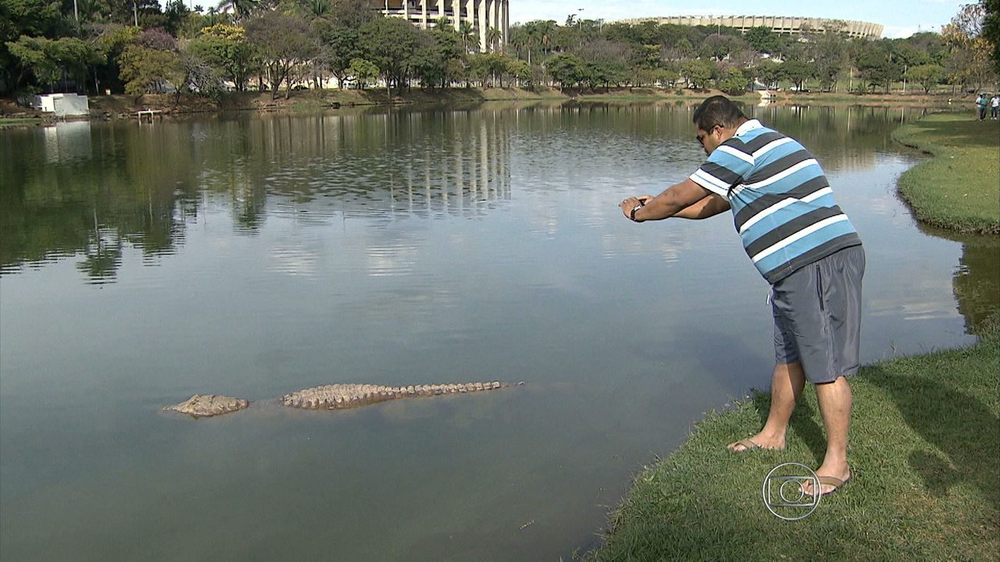
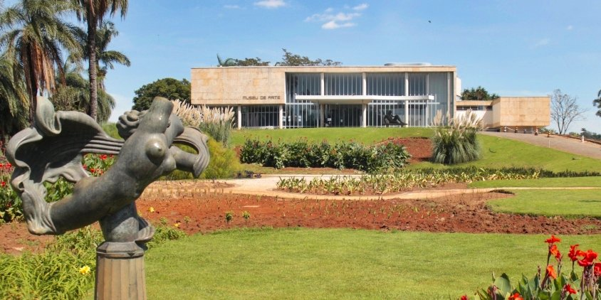

A Igrejinha da Pampulha levou anos para ser reconhecida
Em 1943, quando a construção da capela foi concluída, a Igreja
Católica se recusou a reconhecer o local como um santuário religioso,
por considerá-la moderna demais. Mesmo com os 14 painéis da Via Sacra
de Cândido Portinari, os católicos não identificavam figuras sagradas o
suficiente no local. Somente em 1958, a Igreja São Francisco de Assis passou a realizar missas.

Existe mais de um jacaré na Lagoa
Engana-se quem pensa que o icônico Jacaré da Pampulha não tem uma
família. Segundo o último censo feito pela Prefeitura de Belo Horizonte,
em maio do ano passado, existem no mínimo 20 répteis no local. A origem
deles é desconhecida, alguns dizem que pescadores os soltaram na lagoa.

O Museu de Arte da Pampulha foi projetado para ser um cassino
Com o aval do então prefeito de BH, Juscelino Kubitschek, o cassino
foi o primeiro projeto de Oscar Niemeyer para o Conjunto da Pampulha.
O local atraía jogadores do Brasil inteiro e era um point da vida noturna
belo-horizontina. Porém, com a proibição de cassinos no Brasil, em 1946,
fechou suas portas por dez anos e só foi reaberto em 1957, como um museu.